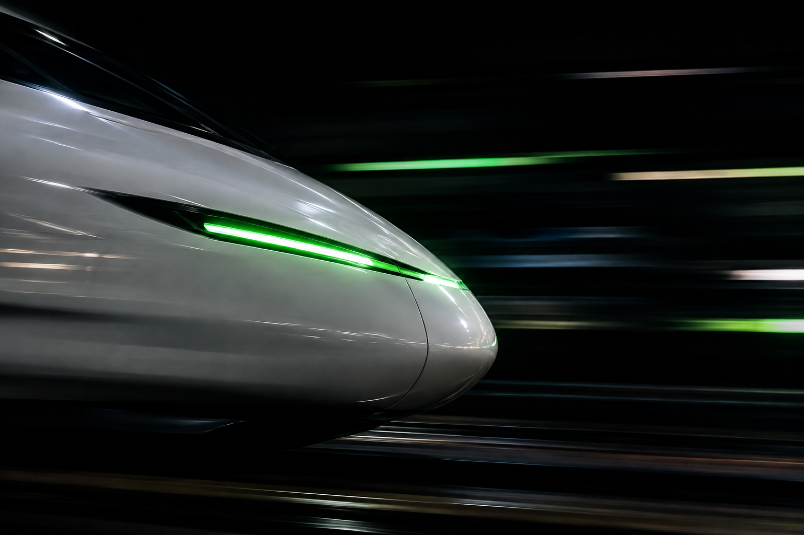
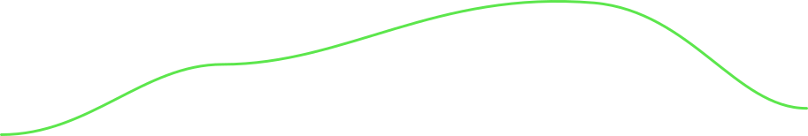
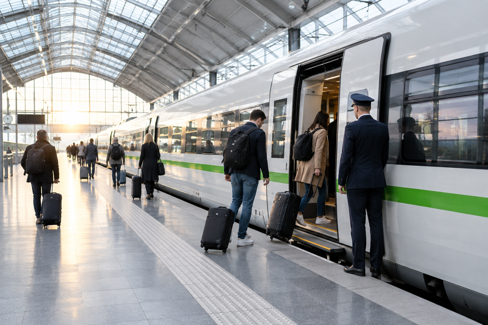
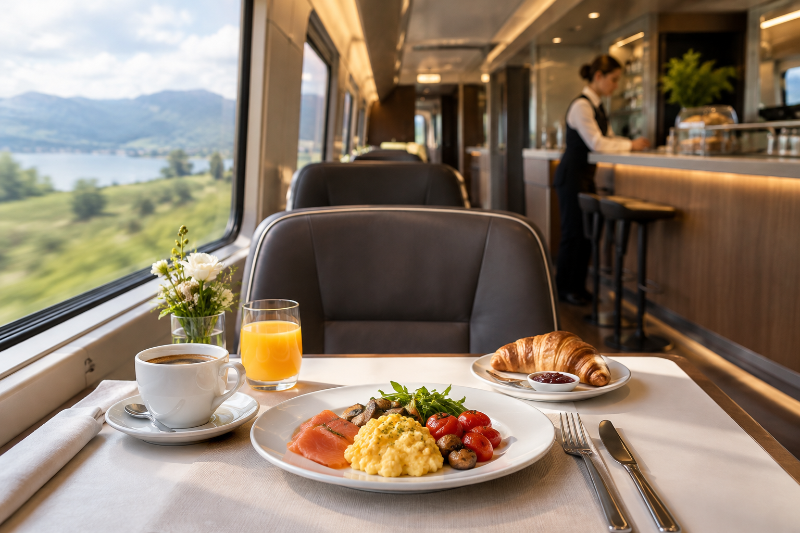
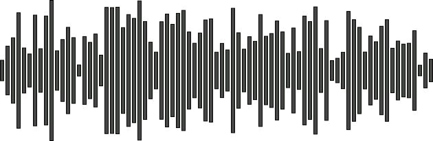
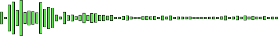
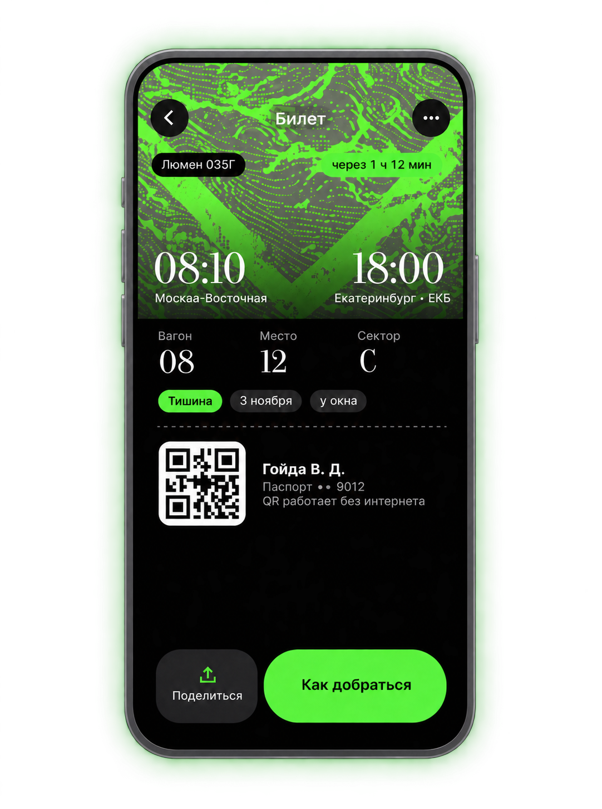

Вокзал
Москва-Восточная
Метро «Черкизовская».
Вход к платформам со стороны Окружного проезда.
Схема вокзала →
Сайт скоростного поезда Москва — Екатеринбург

Москва — Екатеринбург
7 часов 50 минут
Ежедневно в 06:40 · 08:10 · 12:30 · 17:55
«Люмен» — концепция скоростного сервиса между Москвой и Екатеринбургом. Представили, как новый перевозчик мог бы знакомить пассажиров с маршрутом и помогать планировать поездку.
Структуру сайта построили вокруг вопросов перед покупкой. Каждый следующий блок помогает оценить условия поездки и принять решение.
| Вопрос пассажира | Как отвечает лендинг |
|---|---|
| «Почему стоит выбрать поезд?» | Время в пути и условия для работы и отдыха помогают оценить поездку. |
| «Вдруг поезд опоздает?» | Расписание и условия компенсации объясняют обязательства сервиса. |
| «В вагоне будет шумно» | Сравнение уровня шума показывает, на какой комфорт можно рассчитывать. |
| «Не разберусь с посадкой» | Знакомим с вокзалом и показываем электронный билет с вагоном и местом. |
| «Непонятно, сколько стоит» | На первом экране даем ценовой ориентир и переход к поиску билетов. |
Характеристики линии объясняют заявленное время в пути. Схема маршрута показывает, как пройдет дорога: от Москвы через Нижний Новгород и Пермь до Екатеринбурга.


Москва Нижний Новгород Пермь Екатеринбург Волга Кама УралСтоянки в пути15 минут
Скорость привлекает внимание, а подробности помогают сделать выбор. Показываем знакомые ситуации: посадку на перроне, работу в дороге и обед у окна.




80 дБСалон самолета
58 дБВ поезде
Практические условия вынесли в короткие блоки. Пассажир заранее узнает, откуда отправляется поезд, что взять с собой и где найти ответ на оставшийся вопрос.
Вокзал
Метро «Черкизовская».
Вход к платформам со стороны Окружного проезда.
Схема вокзала →
Багаж
Чемодан и ручная кладь. Велосипед и лыжи — в отдельном отсеке вагона.
Правила провоза →
Довезем вовремя
Если поезд прибудет в Екатеринбург позже расписания, до 100% стоимости билета вернется на карту автоматически.
Условия гарантии →
Правила и условия
Багаж, питание и условия компенсации помогают оценить предложение до покупки билета.
Частые вопросы
Возврат, посадка и перевозка животных собраны в FAQ, чтобы детали не перегружали основной рассказ.
Контакты и поддержка
Контакты перевозчика и помощь дают понятный следующий шаг, если вопрос остался.

Время отправления, вагон, место и QR-код собраны на одном экране. Показываем, как пассажир получает доступ к поездке и находит нужные данные перед посадкой.